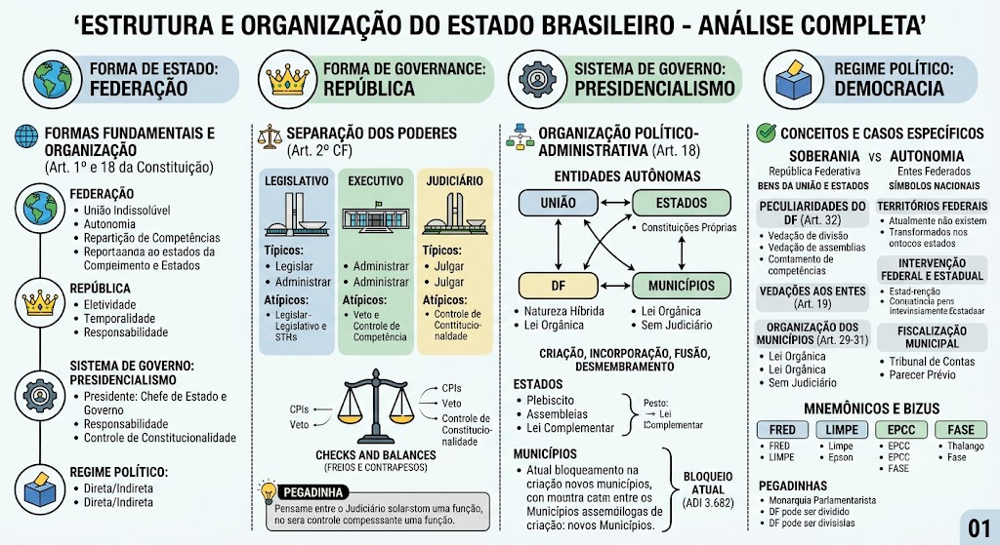
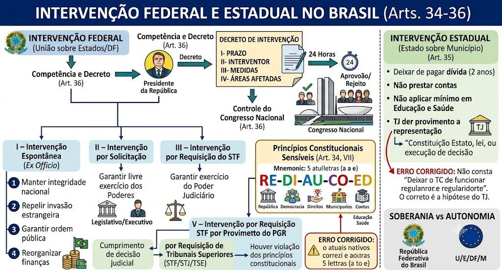
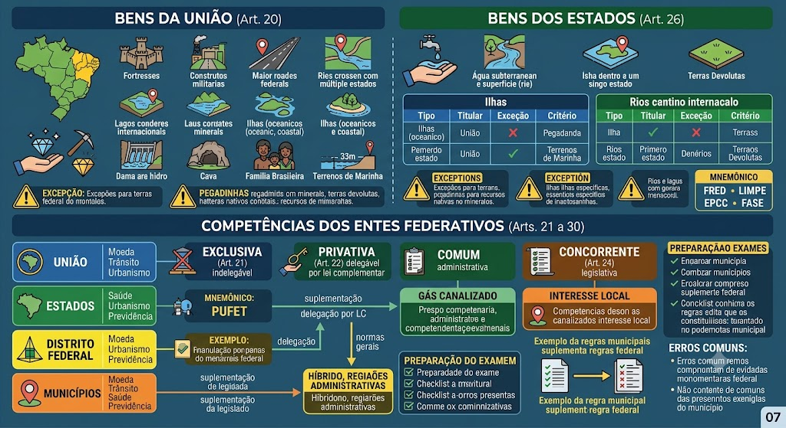
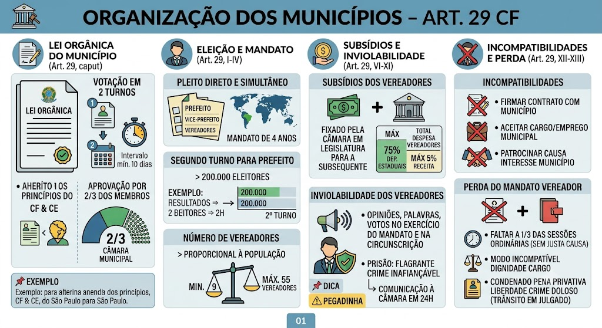
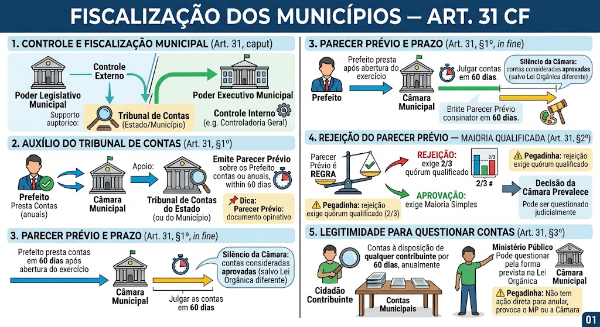
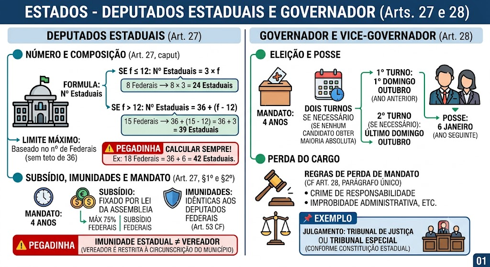
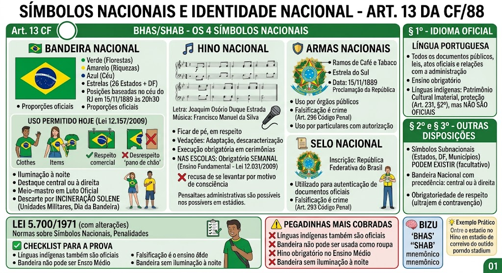

Visão Geral — Art. 1º e 18 da CF
Visão Geral — Art. 1º e 18 da CF
O Brasil adota simultaneamente quatro características fundamentais:
- Forma de Estado: Federação (Art. 1º, caput) – união indissolúvel de Estados autônomos.
- Forma de Governo: República (Art. 1º, caput) – eletividade, temporalidade e responsabilidade dos governantes.
- Sistema de Governo: Presidencialismo – Presidente é Chefe de Estado e de Governo, eleito pelo povo.
- Regime Político: Democracia (Art. 1º, parágrafo único) – poder emana do povo, exercido direta ou indiretamente.
Forma de Estado: Federação — Características
Forma de Estado: Federação — Características
O Brasil adota a forma federativa de Estado (Art. 1º, caput).
Características da Federação brasileira:
- Indissolúvel – nenhum Estado pode se separar da Federação (vedação ao direito de secessão).
- Autonomia dos entes – União, Estados, DF e Municípios possuem autonomia política, administrativa e financeira (Art. 18, caput).
- Repartição de competências – definida nos Arts. 21 a 30.
- Constituição rígida – não pode ser alterada por emenda que suprima a forma federativa (cláusula pétrea – Art. 60, §4º, I).
Forma de Governo: República — Características
Forma de Governo: República — Características
O Brasil adota a forma republicana de governo (Art. 1º, caput).
Características da República:
- Eletividade – representantes escolhidos pelo povo (direta ou indiretamente).
- Temporalidade – mandatos com prazo determinado.
- Responsabilidade – governantes prestam contas ao povo.
- Soberania popular – o poder emana do povo (Art. 1º, parágrafo único).
⚠️ Pegadinha: A banca afirma que o Brasil é uma monarquia parlamentarista. ERRADO. É uma república presidencialista.
Sistema de Governo: Presidencialismo
Sistema de Governo: Presidencialismo
O Brasil adota o presidencialismo (Art. 1º, caput).
Características do Presidencialismo:
- O Presidente é Chefe de Estado e Chefe de Governo simultaneamente.
- Eleito diretamente pelo povo (Art. 77, caput).
- Independência entre os Poderes (Art. 2º).
- Inamovibilidade – o Presidente não pode ser removido por voto de desconfiança (diferente do parlamentarismo).
⚠️ Pegadinha: A banca diz que o Brasil adota o parlamentarismo. ERRADO. O sistema é presidencialista.
Regime Político: Democracia — Formas de Exercício
Regime Político: Democracia — Formas de Exercício
Regime Político: Democracia (Art. 1º, parágrafo único).
'Todo o poder emana do povo, que o exerce por meio de representantes eleitos ou diretamente, nos termos desta Constituição.'
Formas de exercício da democracia:
- Direta – o povo decide pessoalmente (plebiscito, referendo, iniciativa popular de lei).
- Indireta – o povo elege representantes (deputados, senadores, prefeitos, governadores, presidente).
- Semidireta – combinação das duas formas (ex: o povo elege representantes, mas também pode ser consultado por plebiscito ou referendo).
Princípio da Separação dos Poderes
Princípio da Separação dos Poderes
Princípio (Art. 2º): 'São Poderes da União, independentes e harmônicos entre si, o Legislativo, o Executivo e o Judiciário.'
São Poderes da União (não dos Estados, embora os Estados também tenham seus três Poderes):
- Legislativo – elabora leis (Congresso Nacional: Câmara dos Deputados + Senado Federal).
- Executivo – administra e governa (Presidente da República).
- Judiciário – julga e aplica a lei (STF, STJ, TST, TSE, TRFs, TRTs, etc.).
Sistema de Freios e Contrapesos (Checks and Balances)
Sistema de Freios e Contrapesos (Checks and Balances)
Cada Poder controla e é controlado pelos outros:
- Legislativo: fiscaliza o Executivo (CPIs, impeachment), aprova leis, julga o Presidente em crime de responsabilidade (Art. 52, I).
- Executivo: veto, medida provisória, decreto autônomo (Art. 84, VI), lei delegada (Art. 68), nomeia ministros do STF (Art. 84, XX).
- Judiciário: controle de constitucionalidade, julga a constitucionalidade das leis (Art. 97, 102, I, a).
💡 Exemplo Prático: O Presidente veta um projeto de lei aprovado pelo Congresso. O Legislativo pode derrubar o veto por maioria absoluta (Art. 66, §4º). O Judiciário, por sua vez, pode declarar a lei inconstitucional se entender que viola a CF. É o freio e contrapeso em ação.
Funções Típicas e Atípicas dos Poderes
Funções Típicas e Atípicas dos Poderes
Funções TÍPICAS:
- Legislativo → legislar (Art. 48 CF).
- Executivo → administrar (Art. 84 CF).
- Judiciário → julgar (Art. 92 CF).
Funções ATÍPICAS:
- Legislativo → julgar (impeachment do Presidente – Art. 52, I) e administrar (gestão interna da Câmara e Senado).
- Executivo → legislar (medida provisória – Art. 62; decreto autônomo – Art. 84, VI; lei delegada – Art. 68).
- Judiciário → administrar (gestão interna dos tribunais – Art. 99 CF) e, em algumas situações, legislar (regimentos internos dos tribunais).
⚠️ Pegadinha: A banca afirma que o Judiciário só exerce função típica de julgar. ERRADO. Também exerce funções atípicas (administrativa e legislativa, esta última na elaboração de seus regimentos internos).
🌎 Forma de Estado — Federação
🌎 Forma de Estado — Federação
FEDERAÇÃO: União de entes autônomos (indissolúvel).
- Possui descentralização política (cada ente faz suas leis).
- 4 entes: União, Estados, DF, Municípios.
🧠 Dica: 'O Estado é FEderado' (FE = Federação).
⚠️ Pegadinha: A Federação é uma união indissolúvel — Estados não podem se separar (Art. 1º, caput).
👑 Forma de Governo — República
👑 Forma de Governo — República
REPÚBLICA: Caracterizada pela eletividade e temporariedade.
- Dever de prestar contas (responsabilidade do gestor).
- Soberania popular — poder emana do povo.
🧠 Dica: 'O Governo é REpublicano' (RE = República).
⚠️ Pegadinha: República não é sinônimo de democracia direta; é a forma de governo, enquanto democracia é o regime político.
⚙️ Funcionamento Político — Sistema e Regime
⚙️ Funcionamento Político — Sistema e Regime
Sistema de Governo: PRESIDENCIALISMO
- O Presidente é, ao mesmo tempo, Chefe de Estado e Chefe de Governo.
- Eleito diretamente pelo povo.
- Inamovibilidade (não cai por voto de desconfiança).
Regime Político: DEMOCRACIA
- Todo o poder emana do povo (Direta, Indireta ou Semidireta).
- Direta: plebiscito, referendo, iniciativa popular.
- Indireta: eleição de representantes (regra geral).
⚠️ Pegadinha: Presidencialismo não significa que o Presidente governa sozinho; ele depende da harmonia com os outros Poderes (freios e contrapesos).
🗺️ Organização Político-Administrativa (Art. 18)
🗺️ Organização Político-Administrativa (Art. 18)
Art. 18 da CF/88: A organização compreende a União, os Estados, o Distrito Federal e os Municípios, todos autônomos.
- 🏛️ União: Representa a soberania do Estado Brasileiro no exterior, mas internamente é apenas autônoma.
- 🗺️ Estados: Possuem Constituições Próprias e auto-organização.
- 🏙️ Municípios: Possuem Leis Orgânicas (não têm Constituição nem Judiciário próprio).
- 🏢 Distrito Federal: Natureza híbrida (acumula competências estaduais e municipais), com Lei Orgânica própria (Art. 32).
🔄 Soberania vs Autonomia
🔄 Soberania vs Autonomia
🏛️ República Federativa do Brasil: Detém a SOBERANIA (poder supremo e independente no plano internacional).
🏘️ Entes Federados (U/E/DF/M): Detêm apenas AUTONOMIA (capacidade de autogestão nos limites da lei).
⚠️ CUIDADO: Territórios Federais não são entes federados. Eles integram a União e não possuem autonomia política.
🧠 MNEMÔNICO FINAL — 'FRED + LIMPE + EPCC + FASE'
🧠 MNEMÔNICO FINAL — 'FRED + LIMPE + EPCC + FASE'
Estrutura do Estado:
- Federação + República + Eleição direta + Democracia (FRED)
Administração Pública:
- Legalidade + Impessoalidade + Moralidade + Publicidade + Eficiência (LIMPE)
Competências:
- Exclusiva + Privativa + Comum + Concorrente (EPCC)
Administração Indireta:
- Fundações + Autarquias + Sociedades de Economia Mista + Empresas Públicas (FASE)
📌 Dica: Guarde esses mnemônicos para não errar questões conceituais!
Entes Federativos (Art. 18, caput)
Entes Federativos (Art. 18, caput)
A organização político-administrativa da República Federativa do Brasil compreende a União, os Estados, o Distrito Federal e os Municípios, todos autônomos.
Características de cada ente:
- União – soberania externa, defesa nacional, relações internacionais.
- Estados – possuem Constituição Estadual própria.
- Distrito Federal – natureza híbrida (competências estaduais + municipais).
- Municípios – possuem Lei Orgânica (não têm Constituição) e não possuem Judiciário próprio (a Justiça Estadual julga as questões municipais).
Art. 18, §1º — Brasília, Capital Federal
Art. 18, §1º — Brasília, Capital Federal
Art. 18, §1º: Brasília é a Capital Federal.
Brasília está localizada no Distrito Federal e é a sede do Governo Federal. A mudança da Capital Federal exige lei complementar (Art. 18, §2º).
Art. 18, §§ 3º e 4º — Criação, Incorporação, Fusão e Desmembramento
Art. 18, §§ 3º e 4º — Criação, Incorporação, Fusão e Desmembramento
§3º — Estados:
A criação, incorporação, fusão e desmembramento de Estados dependem de:
- Plebiscito das populações diretamente interessadas;
- Oitiva das Assembleias Legislativas (parecer não vinculante);
- Lei Complementar do Congresso Nacional.
§4º — Municípios:
A criação, incorporação, fusão e desmembramento de Municípios dependem de:
- Lei complementar federal fixando período para criação (ainda não editada – STF suspendeu novos municípios);
- Estudos de viabilidade;
- Plebiscito das populações envolvidas;
- Lei estadual efetivando a criação.
🚨 Situação atual (ADI 3.682): A lei complementar federal nunca foi aprovada, portanto não há criação de novos municípios no Brasil (salvo os convalidados pela EC 57/2008).
Peculiaridades do Distrito Federal (Art. 32)
Peculiaridades do Distrito Federal (Art. 32)
O Distrito Federal possui regras únicas:
- Vedação de divisão em Municípios: Art. 32, caput – o DF não pode ser dividido em Municípios; organiza-se em Regiões Administrativas (RAs).
- Competência híbrida: Art. 32, §1º – o DF acumula as competências legislativas e tributárias reservadas aos Estados e Municípios.
- Lei Orgânica própria: não possui Constituição Estadual nem Lei Orgânica Municipal; sua norma fundamental é a Lei Orgânica do Distrito Federal, aprovada por 2/3 da Câmara Legislativa (Art. 32, §2º).
- Autonomia: é ente federativo autônomo (Art. 18, caput), com governador e vice eleitos pelo povo (Art. 32, §3º), e Câmara Legislativa (Art. 32, §4º).
Territórios Federais — Art. 18, §2º e Art. 33
Territórios Federais — Art. 18, §2º e Art. 33
Os Territórios Federais integram a União e não possuem autonomia.
- Não são entes federativos – não têm autonomia política.
- A criação, transformação em Estado ou reintegração ao Estado de origem é regulada por lei complementar (LC nº 20/1974).
Atualmente não existem Territórios Federais no Brasil:
- Roraima → transformado em Estado (ADCT, art. 4º).
- Amapá → transformado em Estado (ADCT, art. 4º).
- Fernando de Noronha → extinto, retornou a Pernambuco.
Poderes no Território: Se houvesse, o Presidente da República nomearia o Governador (Art. 84, XV, 'e'), e a justiça seria federal.
Organização (Art. 33):
- Se o Território tiver mais de 100 mil habitantes, terá órgãos judiciários de primeira e segunda instância, Ministério Público e Defensoria Pública (§1º).
- Terá Câmara Territorial (§2º) e suas contas serão fiscalizadas pelo Tribunal de Contas da União (§3º).
Vedações aos Entes (Art. 19 CF)
Vedações aos Entes (Art. 19 CF)
É vedado à União, aos Estados, ao DF e aos Municípios:
- Estabelecer cultos religiosos ou igrejas (inciso I).
- Subvencionar cultos religiosos ou igrejas (inciso II).
- Recusar fé a documentos públicos – Art. 19, III: não podem recusar validade a documentos públicos de outros entes em todo o território nacional. STF já consolidou (SV 45) que nenhum ente pode exigir autenticação ou reconhecimento de firma para documentos públicos produzidos por outro ente federativo.
Mapa-mental — Organização do Estado
Competência e Decreto de Intervenção (Art. 36 da CF)
Competência e Decreto de Intervenção (Art. 36 da CF)
A União não intervirá nos Estados ou no Distrito Federal, salvo nas hipóteses previstas na Constituição.
Competência para Decretar: Compete privativamente ao Presidente da República decretar a intervenção federal, mediante decreto.
Controle do Congresso Nacional: O Presidente submeterá o decreto de intervenção ao Congresso Nacional no prazo de 24 horas, que poderá aprová-lo ou rejeitá-lo.
Decreto de Intervenção: É o ato que formaliza a intervenção. Esse decreto estabelecerá as seguintes regras:
- I – O prazo de vigência;
- II – O interventor;
- III – As medidas aplicadas;
- IV – As áreas afetadas.
Espécies de Intervenção Federal (Art. 34)
Espécies de Intervenção Federal (Art. 34)
I – Intervenção Espontânea (Ex Officio)
É decretada pelo Presidente da República de forma unilateral (ex officio).
Hipóteses:
1. Manter a integridade nacional.
2. Repelir invasão estrangeira ou invasão de uma unidade da federação em outra.
3. Garantir o cumprimento da ordem pública.
4. Reorganizar as finanças da unidade da federação que:
- I - Deixar de pagar a dívida com a União por mais de 3 (três) anos consecutivos, salvo por motivos de força maior.
- II - Deixar de repassar receitas tributárias para os municípios no prazo legal.
---
II – Intervenção por Solicitação
O Presidente a decretará mediante pedido.
Observações importantes:
- O pedido é essencial, não podendo o Presidente decretar ex officio.
- O pedido não vincula o Presidente; ele decide se decreta ou não.
Hipótese:
- Garantir o livre exercício, nas unidades da federação, dos Poderes Legislativo e Executivo.
---
III – Intervenção por Requisição do STF
O Presidente faz o Decreto mediante ordem do Supremo Tribunal Federal (STF).
Hipótese:
- Garantir o pleno exercício do Poder Judiciário nos Estados ou no Distrito Federal.
---
IV – Intervenção por Requisição do STF, STJ ou TSE
O Presidente decretará a intervenção mediante requisição de qualquer um dos Tribunais superiores.
Hipótese:
- Garantir o cumprimento de decisão judicial.
---
V – Intervenção por Requisição do STF, por Provimento de Representação do PGR
O Presidente decretará a intervenção mediante requisição do STF, por meio de representação do Procurador-Geral da República (PGR). O STF faz a requisição após a representação do PGR.
Hipóteses (Ocorre em 2 situações):
1. Garantir o cumprimento da lei federal.
2. Houver violação dos princípios constitucionais (CF/88, Art. 34, inciso VII, da letra \"a\" até a letra \"e\").
Princípios Constitucionais Sensíveis — Art. 34, VII da CF
Princípios Constitucionais Sensíveis — Art. 34, VII da CF
A União poderá intervir nos Estados ou no Distrito Federal para assegurar a observância dos seguintes princípios (rol taxativo):
a) forma republicana, sistema representativo e regime democrático;
b) direitos da pessoa humana;
c) autonomia municipal;
d) prestação de contas da administração pública, direta e indireta;
e) aplicação do mínimo exigido da receita resultante de impostos estaduais, compreendida a proveniente de transferências, na manutenção e desenvolvimento do ensino e nas ações e serviços públicos de saúde.
🧠 Para concurso — memorize assim:
Art. 34, VII = “RE-DI-AU-CO-ED”
- RE → Republicana + sistema representativo + regime democrático
- DI → Direitos da pessoa humana
- AU → Autonomia municipal
- CO → Prestação de contas
- ED → Educação + saúde
⚠️ Pegadinha de prova: o inciso VII não vai de “a” até “i”. Atualmente são somente 5 alíneas: a, b, c, d e e.
Intervenção Estadual (Art. 35 CF) — CORRIGIDO!
Intervenção Estadual (Art. 35 CF) — CORRIGIDO!
O Estado pode intervir no Município nos seguintes casos taxativos (Art. 35):
I – Deixar de ser paga, sem motivo de força maior, por dois anos consecutivos, a dívida fundada.
II – Não prestar contas devidamente, nos termos da lei.
III – Não aplicar o mínimo exigido da receita municipal em educação (25%) e saúde (15%).
IV – O Tribunal de Justiça der provimento a representação para assegurar a observância de princípios indicados na Constituição Estadual, ou para prover a execução de lei, de ordem ou de decisão judicial.
⚠️ ERRO CORRIGIDO: O arquivo anterior mencionava \"Deixar o Tribunal de Contas de funcionar regularmente\" como hipótese de intervenção. Isso NÃO CONSTA no Art. 35. A hipótese correta é a do Tribunal de Justiça mediante representação.
📌 Exemplo: Se um Município deixar de pagar a dívida fundada por 2 anos, o Estado pode intervir. Se o Tribunal de Justiça Estadual, em representação, constatar violação de princípio constitucional, também cabe intervenção.
Soberania vs Autonomia (Reforço)
Soberania vs Autonomia (Reforço)
🏛️ República Federativa do Brasil: Detém a SOBERANIA (poder supremo e independente no plano internacional).
🏘️ Entes Federados (U/E/DF/M): Detêm apenas AUTONOMIA (capacidade de autogestão nos limites da lei).
⚠️ CUIDADO: Territórios Federais não são entes federados. Eles integram a União e não possuem autonomia política.
Mapa-mental — Intervenção
Art. 20 — Bens da União
Art. 20 — Bens da União
Pertencem à União:
- Terras devolutas indispensáveis à defesa das fronteiras, fortificações, construções militares e vias federais de comunicação.
- Lagos, rios e correntes de água que:
- Banhem mais de um Estado;
- Sirvam de limite com outro país;
- Estendam-se ao exterior;
- Tenham origem ou foz no exterior.
- Ilhas oceânicas e costeiras (ressalvadas as exceções constitucionais).
- Mar territorial, plataforma continental e zona econômica exclusiva.
- Terrenos de marinha (faixa de 33 metros da linha da preamar).
- Recursos minerais (inclusive em propriedade particular).
- Potenciais de energia hidráulica.
- Cavidades naturais subterrâneas.
- Terras tradicionalmente ocupadas pelos indígenas (posse permanente e usufruto exclusivo).
Art. 26 — Bens dos Estados
Art. 26 — Bens dos Estados
Pertencem aos Estados:
- Águas superficiais e subterrâneas (fluviais, lacustres) que não pertençam à União.
- Ilhas fluviais e lacustres que não pertençam à União.
- Terras devolutas (regra geral) — salvo as exceções do Art. 20, I (defesa de fronteiras, fortificações, etc.).
Terras Devolutas — Regra e Exceção
Terras Devolutas — Regra e Exceção
Regra: As terras devolutas pertencem aos Estados.
Exceção (Art. 20, II): Pertencem à União quando forem indispensáveis para:
- Defesa das fronteiras;
- Fortificações;
- Construções militares;
- Vias federais de comunicação;
- Preservação ambiental definida em lei.
⚠️ Pegadinha: A banca troca a regra — sempre lembre: regra = Estado; exceção = União.
Pegadinhas sobre Bens
Pegadinhas sobre Bens
📌 Recursos minerais e potenciais de energia hidráulica pertencem à União (mesmo em propriedade particular).
📌 Terras indígenas pertencem à União (os povos indígenas possuem posse permanente e usufruto exclusivo).
📌 Ilhas fluviais = Estados (regra); ilhas oceânicas = União (regra).
📌 Rios que banham mais de um Estado = União; rios que passam em apenas um Estado = Estado.
Visão Geral da Repartição de Competências
Visão Geral da Repartição de Competências
A Constituição Federal distribui as competências entre os entes federativos (União, Estados, Distrito Federal e Municípios) para evitar conflitos e garantir eficiência na prestação de serviços públicos.
Princípios norteadores:
- Predominância do interesse: União (interesse geral/nacional), Estados (interesse regional), Municípios (interesse local), DF (interesse regional e local).
- Enumeração dos poderes: A União tem competências enumeradas taxativamente (Arts. 21 e 22), enquanto os Estados e Municípios possuem competências remanescentes ou implícitas (Art. 25, caput: competências não vedadas pela CF).
Classificação das competências:
- Exclusiva (Art. 21) – indelegável.
- Privativa (Art. 22) – delegável por lei complementar.
- Comum (Art. 23) – administrativa, exercida por todos.
- Concorrente (Art. 24) – legislativa, entre União, Estados e DF.
- Municipal (Art. 30) – interesse local e suplementação.
🧠 Mnemônico: 'EPCC' – Exclusiva, Privativa, Comum, Concorrente.
Competência Exclusiva da União — Art. 21 (Material/Administrativa)
Competência Exclusiva da União — Art. 21 (Material/Administrativa)
Competência Exclusiva: somente a União pode exercer. Não pode ser delegada a nenhum outro ente.
Principais hipóteses (resumo):
- Relações internacionais, guerra, defesa nacional.
- Estado de sítio, defesa e intervenção federal.
- Moeda e sistema financeiro.
- Serviços postais, telecomunicações, radiodifusão, energia elétrica.
- Portos, polícia federal, justiça especializada.
- Anistia, calamidades públicas, recursos hídricos, áreas protegidas.
- Organização da Defensoria Pública e AGU.
⚠️ Pegadinha: A banca pergunta se a União pode delegar a competência exclusiva – NÃO. Só a privativa pode ser delegada.
Competência Privativa da União — Art. 22 (Legislativa)
Competência Privativa da União — Art. 22 (Legislativa)
Competência Privativa: somente a União pode legislar, mas pode delegar por lei complementar aos Estados (Art. 22, parágrafo único).
Principais hipóteses (resumo):
- Direito civil, comercial, penal, processual, eleitoral, agrário, marítimo, aeronáutico, espacial e do trabalho.
- Desapropriação, requisições, fronteiras, seguridade social.
- Forças Armadas e polícias militares.
- Crédito, câmbio, comércio exterior, transportes, trânsito.
- Mineração, telecomunicações, radiodifusão.
- Registro público, propriedade intelectual, licitações.
- Normas gerais de direito financeiro, tributário e orçamentário.
- Proteção à infância, urbanismo, meio ambiente, agrário.
🧠 Mnemônico: 'Desapropriação, Fronteiras, Seguridade, Forças, Crédito, Comércio, Mineração...' – a pegadinha principal é a possibilidade de delegação por lei complementar.
Competência Comum — Art. 23 (Administrativa)
Competência Comum — Art. 23 (Administrativa)
Competência Comum: todos os entes (União, Estados, DF e Municípios) podem exercer simultaneamente. É uma competência administrativa/executiva (não legislativa).
Principais hipóteses (resumo):
- Guarda da Constituição, leis e instituições.
- Ordem pública e segurança.
- Patrimônio histórico, cultural, artístico e paisagístico.
- Combate à pobreza e marginalização.
- Acesso à cultura, educação, ciência.
- Proteção ao meio ambiente, florestas, fauna e flora.
- Fomento agropecuário e abastecimento alimentar.
- Habitação, combate à violência e criminalidade.
- Fiscalização de concessões de recursos naturais.
⚠️ Pegadinha: A competência comum é administrativa, não legislativa. Se a banca disser que é competência comum legislar, está errado.
Competência Concorrente — Art. 24 (Legislativa)
Competência Concorrente — Art. 24 (Legislativa)
Competência Concorrente: União, Estados e DF legislam sobre o mesmo tema (não inclui Municípios). A União fixa diretrizes gerais; Estados e DF legislam de forma suplementar.
Principais hipóteses (resumo):
- Direito Tributário, Financeiro, Penitenciário, Econômico e Urbanístico (mnemônico: PUFET).
- Orçamento, comércio, custas, profissões, produção e consumo.
- Previdência social, saúde, educação, cultura, desporto.
- Assistência jurídica, proteção à infância e juventude, assistência social.
- Direito processual penal e civil (normas gerais).
- Telecomunicações, energia, mineração, recursos hídricos.
- Meio ambiente, patrimônio histórico, proteção ao consumidor.
- Responsabilidade por danos ambientais, consumeristas e a bens culturais.
Regras de aplicação:
- A União edita normas gerais (Art. 24, §1º).
- Os Estados e DF suplementam, no que couber, a legislação federal (Art. 24, §2º).
- Inexistindo lei federal, os Estados e DF podem legislar plenamente, mas a superveniência de lei federal suspende a eficácia da lei estadual naquilo que for contrário (Art. 24, §3º e §4º) — não revoga nem anula.
🧠 Mnemônico: 'PUFET' – Penitenciário, Urbanístico, Financeiro, Econômico, Tributário.
Competências dos Estados (Arts. 25 a 28)
Competências dos Estados (Arts. 25 a 28)
Os Estados têm competências que não lhes são vedadas pela CF (Art. 25, caput) – são as chamadas competências remanescentes.
Art. 25, §1º: Os Estados podem legislar sobre questões regionais.
Art. 25, §2º: Cabe aos Estados explorar diretamente, ou mediante concessão, os serviços locais de gás canalizado (competência própria, vedada à União, salvo exceções).
Art. 25, §3º: Os Estados podem instituir regiões metropolitanas, aglomerações urbanas e microrregiões, para integrar serviços públicos comuns, mediante lei complementar.
Art. 26: Inclui os bens dos Estados (águas, ilhas fluviais/lacustres, terras devolutas).
Art. 27: Número de deputados estaduais (triplo dos federais, com limite de 36 + excedente) e regras de composição da Assembleia Legislativa.
Art. 28: Eleição do Governador e Vice-Governador (sistema majoritário, dois turnos).
⚠️ Pegadinha: A exploração de gás canalizado é competência estadual (Art. 25, §2º) – não confundir com o gás natural que é da União (Art. 21, XII).
Competências dos Municípios — Art. 30
Competências dos Municípios — Art. 30
Os Municípios possuem competências próprias, independentes dos outros entes (Art. 30):
I – Legislar sobre assuntos de interesse local.
II – Suplementar a legislação federal e a estadual no que couber.
III – Instituir e arrecadar os tributos de sua competência (IPTU, ISS, ITBI, taxas), bem como aplicar suas rendas.
IV – Criar, organizar e suprimir distritos, observada a legislação estadual.
V – Organizar e prestar os serviços públicos de interesse local, como transporte coletivo, limpeza urbana, iluminação pública, etc.
VI – Manter, com a cooperação técnica e financeira da União e do Estado, programas de educação infantil e de ensino fundamental.
VII – Prestar, com a cooperação técnica e financeira da União e do Estado, serviços de saúde pública.
VIII – Promover a ordenação territorial, mediante planejamento e controle do uso, do parcelamento e da ocupação do solo urbano.
IX – Promover a proteção do patrimônio histórico-cultural local, observada a legislação federal e estadual.
📖 Exemplo: O Município pode proibir estacionamento em determinada rua (interesse local), mas não pode legislar sobre normas gerais de trânsito (competência da União).
Competências do Distrito Federal — Art. 32
Competências do Distrito Federal — Art. 32
O DF possui natureza híbrida: acumula competências de Estado e de Município.
Características especiais:
- Possui Legislativo próprio (Câmara Legislativa do DF).
- Possui Governador eleito diretamente.
- Vedada a divisão em Municípios (Art. 32, § 1º).
- A área do DF será desmembrada do Estado de origem (Goiás).
- Sua organização e funcionamento serão regulados por lei orgânica (não Constituição), aprovada por maioria absoluta da Câmara Legislativa.
- Competências estaduais e municipais acumuladas: o DF pode legislar sobre interesse local (art. 30) e também sobre questões regionais (art. 25).
⚠️ Pegadinha: O DF não pode ser dividido em Municípios, mas pode criar regiões administrativas (que não são Municípios).
🧠 MNEMÔNICOS GERAIS
🧠 MNEMÔNICOS GERAIS
- 'EPCC' – Exclusiva (só União – não delega), Privativa (só União – delega por LC), Comum (todos juntos – administrativa), Concorrente (União + Estados/DF – legislativa).
- 'PUFET' – Penitenciário, Urbanístico, Financeiro, Econômico, Tributário (incisos I a V do Art. 24).
- Competência exclusiva: Art. 21 – não delegável.
- Competência privativa: Art. 22 – delegável por lei complementar.
- Competência comum: Art. 23 – todos os entes, execução.
- Competência concorrente: Art. 24 – União dá normas gerais; Estados e DF suplementam.
- Municípios: Art. 30 – interesse local, suplementação, serviços locais, tributos, ensino fundamental, saúde, ordenamento territorial.
- DF: Art. 32 – híbrido, não pode ter Municípios, regido por lei orgânica.
⚠️ Pegadinhas Mais Cobradas
⚠️ Pegadinhas Mais Cobradas
❌ 'Estado pode emitir moeda.' → ERRADO (exclusiva da União – Art. 21, VII).
❌ 'Competência exclusiva pode ser delegada.' → ERRADO (não pode; só a privativa pode – Art. 22, parágrafo único).
❌ 'Delegação da competência privativa é por lei ordinária.' → ERRADO (exige lei complementar).
❌ 'Na competência comum, só a União pode agir.' → ERRADO (todos os entes agem simultaneamente).
❌ 'Municípios participam da competência concorrente.' → ERRADO (só União, Estados e DF).
❌ 'O DF pode ser dividido em Municípios.' → ERRADO (vedado, Art. 32, §1º).
❌ 'A competência para legislar sobre gás canalizado é da União.' → ERRADO (é estadual – Art. 25, §2º).
❌ 'O Município possui Constituição.' → ERRADO (possui Lei Orgânica).
❌ 'Ilhas fluviais pertencem à União (regra).' → ERRADO (regra = Estados).
❌ 'Terras devolutas pertencem à União (regra).' → ERRADO (regra = Estados).
✅ CHECKLIST PARA A PROVA
✅ CHECKLIST PARA A PROVA
✅ Competência exclusiva (Art. 21): só União, não delegável.
✅ Competência privativa (Art. 22): só União, delegável por LC.
✅ Competência comum (Art. 23): todos os entes, natureza administrativa.
✅ Competência concorrente (Art. 24): União + Estados/DF, natureza legislativa; União fixa diretrizes, Estados suplementam.
✅ Municípios (Art. 30): interesse local, suplementação, serviços locais, tributos próprios, ensino fundamental, saúde, ordenamento territorial.
✅ DF (Art. 32): híbrido, não divide em Municípios, lei orgânica.
✅ Estados (Art. 25-28): competências remanescentes, gás canalizado, regiões metropolitanas, bens estaduais, eleição de Governador.
✅ Bens: União (fronteiras, ilhas oceânicas, rios que banham mais de um Estado, recursos minerais, energia hidráulica, terras indígenas, terrenos de marinha); Estados (águas, ilhas fluviais/lacustres, terras devolutas).
Exemplo Prático – Conflito de Competências
Exemplo Prático – Conflito de Competências
Imagine que o Município X crie uma lei proibindo a circulação de caminhões em determinada via para reduzir acidentes. A União tem competência privativa para legislar sobre trânsito (Art. 22, XI). O Município pode suplementar a legislação federal em aspectos locais (Art. 30, II), desde que não contrarie as normas gerais. Se a lei municipal for mais restritiva, pode ser válida, mas se contrariar o Código de Trânsito Brasileiro, será inconstitucional.
Mapa-mental — Competências
Lei Orgânica do Município (Art. 29, caput)
Lei Orgânica do Município (Art. 29, caput)
O Município é regido por Lei Orgânica, votada em dois turnos, com intervalo mínimo de 10 dias entre eles, e aprovada por 2/3 (dois terços) dos membros da Câmara Municipal.
A Lei Orgânica deve obedecer aos princípios da Constituição Federal e da Constituição Estadual.
📌 Exemplo: A Lei Orgânica de São Paulo foi aprovada com 2/3 dos vereadores, após dois turnos de votação.
Eleição de Prefeito, Vice-Prefeito e Vereadores (Art. 29, I a IV)
Eleição de Prefeito, Vice-Prefeito e Vereadores (Art. 29, I a IV)
Art. 29, I: Eleição do Prefeito, Vice-Prefeito e Vereadores, para mandato de 4 (quatro) anos, mediante pleito direto e simultâneo realizado em todo o país.
Art. 29, II: Eleição do Prefeito e Vice-Prefeito: se o Município tiver mais de 200.000 eleitores, haverá segundo turno se nenhum candidato obtiver maioria absoluta dos votos válidos (exceto se houver disposição em contrário na Lei Orgânica).
Art. 29, III: Posse do Prefeito e Vice-Prefeito em 1º de janeiro do ano seguinte à eleição.
Art. 29, IV: Número de Vereadores proporcional à população do Município, conforme limites estabelecidos na CF/88 (atualmente, mínimo de 9 e máximo de 55 vereadores).
⚠️ Pegadinha: O segundo turno para Prefeito só ocorre em municípios com mais de 200 mil eleitores. A banca adora trocar esse número.
Subsídios dos Vereadores (Art. 29, VI e VII)
Subsídios dos Vereadores (Art. 29, VI e VII)
Art. 29, VI: O subsídio dos Vereadores será fixado pela Câmara Municipal em cada legislatura para a subsequente, observado o que dispõe a lei.
Art. 29, VII: O subsídio dos Vereadores não pode ultrapassar 75% (setenta e cinco por cento) do subsídio dos Deputados Estaduais (ou, se não houver, o limite é de 75% do subsídio dos Deputados Federais).
Art. 29, VIII: O total da despesa com a remuneração dos Vereadores não pode ultrapassar 5% (cinco por cento) da receita do Município.
📌 Dica: Os subsídios são fixados para a legislatura seguinte; isso evita aumentos no meio do mandato que beneficiem os próprios vereadores.
Inviolabilidade dos Vereadores (Art. 29, IX)
Inviolabilidade dos Vereadores (Art. 29, IX)
Art. 29, IX: Os Vereadores são invioláveis por suas opiniões, palavras e votos no exercício do mandato e na circunscrição do Município.
Art. 29, X: Não podem ser presos, salvo em flagrante de crime inafiançável; nesse caso, a prisão será comunicada à Câmara em até 24 horas.
Art. 29, XI: Não são obrigados a testemunhar sobre informações recebidas em razão do exercício do mandato.
⚠️ Pegadinha: A inviolabilidade dos vereadores é restrita ao âmbito do Município e ao exercício do mandato – diferente da imunidade dos deputados federais, que é mais ampla.
Incompatibilidades e Perda do Mandato (Art. 29, XII e XIII)
Incompatibilidades e Perda do Mandato (Art. 29, XII e XIII)
Art. 29, XII: O Vereador não pode:
- Firmar ou manter contrato com o Município, suas autarquias, empresas públicas, sociedades de economia mista ou fundações;
- Aceitar cargo, função ou emprego remunerado na administração municipal;
- Patrocinar causa em que haja interesse do Município.
Art. 29, XIII: Perde o mandato o Vereador que:
- Deixar de comparecer, sem justa causa, a 1/3 das sessões ordinárias;
- Proceder de modo incompatível com a dignidade do cargo;
- For condenado a pena privativa de liberdade por crime doloso, após trânsito em julgado.
📌 Exemplo: Um vereador que falta a mais de 1/3 das sessões sem justificativa pode ter o mandato cassado pela Câmara.
Mapa-mental – Organização dos Municípios
Fiscalização pelo Poder Legislativo Municipal (Art. 31, caput)
Fiscalização pelo Poder Legislativo Municipal (Art. 31, caput)
Art. 31, caput: A fiscalização do Município será exercida pelo Poder Legislativo Municipal, mediante controle externo, e pelos sistemas de controle interno do Poder Executivo Municipal.
Controle externo: exercido pela Câmara Municipal, com auxílio do Tribunal de Contas do Estado (ou do Município, se houver).
Controle interno: exercido por órgãos próprios da administração municipal (ex.: controladoria geral).
Auxílio do Tribunal de Contas (Art. 31, §1º)
Auxílio do Tribunal de Contas (Art. 31, §1º)
Art. 31, §1º: O controle externo da Câmara Municipal será exercido com o auxílio do Tribunal de Contas do Estado (ou do Município, se existir, ou do Tribunal de Contas dos Municípios, onde houver).
O Tribunal de Contas do Estado emite parecer prévio sobre as contas que o Prefeito deve prestar anualmente, no prazo de 60 (sessenta) dias contados da abertura das contas.
📌 Dica: O parecer prévio é um documento opinativo, mas a Câmara só pode rejeitá-lo por 2/3 (dois terços) dos votos dos vereadores (Art. 31, §2º).
Parecer Prévio e Prazo (Art. 31, §1º, in fine)
Parecer Prévio e Prazo (Art. 31, §1º, in fine)
O Prefeito deve prestar contas anualmente, no prazo de 60 (sessenta) dias após a abertura do exercício financeiro (art. 31, §1º, última parte).
Prazo: A Câmara Municipal tem 60 dias para julgar as contas, contados do recebimento do parecer prévio do Tribunal de Contas.
Se a Câmara não julgar as contas no prazo, elas serão consideradas aprovadas (efeito do silêncio – salvo se a Lei Orgânica do Município dispuser de forma diversa).
Rejeição do Parecer Prévio — Maioria Qualificada (Art. 31, §2º)
Rejeição do Parecer Prévio — Maioria Qualificada (Art. 31, §2º)
Art. 31, §2º: A rejeição do parecer prévio do Tribunal de Contas, para que produza efeitos, depende de 2/3 (dois terços) dos membros da Câmara Municipal.
Regra: O parecer prévio é aprovado por maioria simples, mas a rejeição exige quórum qualificado (2/3). Essa é uma pegadinha clássica em provas.
Efeito: Se a Câmara rejeitar o parecer do Tribunal de Contas e aprovar as contas do Prefeito, a decisão da Câmara prevalece, mas pode ser questionada judicialmente.
Legitimidade para Questionar Contas (Art. 31, §3º)
Legitimidade para Questionar Contas (Art. 31, §3º)
Art. 31, §3º: As contas do Município ficarão, durante 60 (sessenta) dias, anualmente, à disposição de qualquer contribuinte, para exame e apreciação, o qual poderá questioná-las pela forma prevista na Lei Orgânica.
Legitimidade: Qualquer cidadão pode questionar as contas municipais, mas a Lei Orgânica deve regulamentar o procedimento.
⚠️ Pegadinha: O contribuinte não tem ação direta para anular as contas, mas pode provocar o Ministério Público ou a Câmara para que fiscalize.
Mapa-mental – Fiscalização Municipal
Deputados Estaduais — Número e Composição (Art. 27, caput)
Deputados Estaduais — Número e Composição (Art. 27, caput)
Art. 27, caput: O número de Deputados Estaduais corresponde ao triplo da representação do Estado na Câmara dos Deputados.
Regra:
- Se o número de Deputados Federais for até 12, o número de Deputados Estaduais será 3 vezes o número de Federais.
- Se o número de Deputados Federais exceder 12, o número de Deputados Estaduais será 36 + (número de Federais - 12).
Exemplos:
- Estado com 8 Deputados Federais → 8 × 3 = 24 Deputados Estaduais.
- Estado com 15 Deputados Federais → 36 + (15 - 12) = 36 + 3 = 39 Deputados Estaduais.
Limite máximo: O número de Deputados Estaduais é o triplo dos Federais, com a fórmula acima. Não há teto fixo de 36; o limite é o número de Federais.
⚠️ Pegadinha: A banca costuma cobrar o cálculo: se o Estado tiver 18 Federais, quantos Estaduais? Resposta: 36 + (18 - 12) = 42.
Subsídio, Imunidades e Mandato (Art. 27, §1º e §2º)
Subsídio, Imunidades e Mandato (Art. 27, §1º e §2º)
Art. 27, §1º: O subsídio dos Deputados Estaduais será fixado por lei de iniciativa da Assembleia Legislativa, observados os limites fixados na CF e na lei.
Art. 27, §2º: Aos Deputados Estaduais aplicam-se as mesmas imunidades dos Deputados Federais, nos termos do Art. 53 da CF.
Mandato: 4 (quatro) anos.
Subsídio: não pode exceder 75% do subsídio dos Deputados Federais (Art. 27, §2º, in fine, alterado pela EC 19/1998).
⚠️ Pegadinha: A imunidade dos Deputados Estaduais é idêntica à dos Federais, mas para os Vereadores é mais restrita (Art. 29, IX).
Governador e Vice-Governador (Art. 28)
Governador e Vice-Governador (Art. 28)
Art. 28: A eleição do Governador e Vice-Governador de Estado, para mandato de 4 (quatro) anos, será realizada em dois turnos se nenhum candidato obtiver maioria absoluta dos votos válidos no primeiro turno.
Regras:
- Primeiro turno: ocorre no 1º domingo de outubro do ano anterior ao término do mandato.
- Segundo turno: ocorre no último domingo de outubro, se necessário.
- Posse: em 6 de janeiro do ano seguinte à eleição.
Perda do cargo: aplicam-se as mesmas regras de perda de mandato previstas para o Presidente da República (crime de responsabilidade, improbidade administrativa, etc.), conforme a Constituição Estadual.
📌 Exemplo: Se um Governador comete crime de responsabilidade, pode ser julgado pelo Tribunal de Justiça ou por Tribunal Especial, conforme a Constituição Estadual.
Mapa-mental – Estados
Símbolos Nacionais — Art. 13, caput
Símbolos Nacionais — Art. 13, caput
Art. 13, caput: 'A bandeira, o hino, as armas e o selo nacional são os símbolos da República Federativa do Brasil.'
São eles:
- 🏳️ Bandeira Nacional – verde e amarela, com o losango azul e a esfera celeste.
- 🎵 Hino Nacional – letra de Joaquim Osório Duque Estrada e música de Francisco Manuel da Silva.
- 🛡️ Armas Nacionais – o brasão da República.
- 📜 Selo Nacional – usado em documentos oficiais.
📖 Para Leigos: Os símbolos nacionais são como a 'identidade visual' do Brasil – representam nossa história, cultura e soberania. Eles são protegidos por lei e devem ser tratados com respeito.
Idioma Oficial — Art. 13, § 1º
Idioma Oficial — Art. 13, § 1º
Art. 13, § 1º: 'A língua portuguesa é o idioma oficial da República Federativa do Brasil.'
Implicações:
- Todo documento público, lei, decisão judicial e ato oficial deve ser redigido em português.
- O ensino da língua portuguesa é obrigatório em todos os níveis (Art. 210, caput).
- As relações com a administração pública (petições, requerimentos) devem ser em português.
Línguas indígenas:
- Não são oficiais, mas são reconhecidas como patrimônio cultural imaterial (Art. 231, §2º) e têm proteção legal (Lei 11.645/2008).
- O Brasil aderiu à Declaração das Nações Unidas sobre os Direitos dos Povos Indígenas, mas o português continua sendo o único idioma oficial.
Outras Disposições (Art. 13, § 2º e § 3º)
Outras Disposições (Art. 13, § 2º e § 3º)
Art. 13, § 2º: 'Os símbolos nacionais devem ser tratados com respeito. É vedado seu uso para fins comerciais sem autorização.'
ATUALIZAÇÃO (Lei 12.157/2009): A Lei 5.700/1971 foi alterada e hoje é permitido o uso da Bandeira Nacional em vestuário, estampas, objetos de uso pessoal e ornamentações, bem como em propaganda comercial, desde que com o devido respeito e sem descaracterização do símbolo. Não há mais necessidade de autorização prévia para uso comercial, mas o uso desrespeitoso (ex.: como pano de chão, em peças íntimas, ou rasgado) continua proibido e pode gerar penalidades.
Símbolos dos Estados, DF e Municípios — Art. 13, § 2º da CF
Símbolos dos Estados, DF e Municípios — Art. 13, § 2º da CF
Art. 13, § 2º: 'Os Estados, o Distrito Federal e os Municípios poderão ter símbolos próprios.'
Regras:
- A criação de símbolos subnacionais (bandeira, hino, brasão) é facultativa, não obrigatória.
- Em solenidades oficiais, a Bandeira Nacional ocupa lugar de honra (posição central ou à direita do observador, quando com outras bandeiras).
- Não há hierarquia desrespeitosa, mas a Bandeira Nacional deve prevalecer em eventos oficiais.
📖 Exemplo: A bandeira do Estado de São Paulo pode ser hasteada ao lado da Nacional, mas a Nacional deve ficar à direita (lado de honra) ou no centro. Em eventos internacionais, a Bandeira Nacional ocupa o centro e as demais em ordem alfabética.
Bandeira Nacional — Características e Normas
Bandeira Nacional — Características e Normas
Bandeira Nacional: adotada em 19 de novembro de 1889 (Decreto nº 4, de 19/11/1889).
Características:
- Retângulo verde (florestas) com um losango amarelo (riquezas minerais).
- No centro, um círculo azul (céu) com a constelação do Cruzeiro do Sul e a frase 'Ordem e Progresso' (positivismo de Augusto Comte).
- As estrelas representam os 26 Estados da Federação e o Distrito Federal – cada estrela corresponde a uma unidade da Federação, com tamanhos e posições baseados no céu do Rio de Janeiro às 20h30 do dia 15 de novembro de 1889.
Normas (Lei 5.700/1971 com alterações):
- Dimensões: modulares, devendo manter as proporções oficiais (largura 14:20 em relação ao comprimento).
- A Bandeira deve ser confeccionada em tecido e com cores oficiais (verde, amarelo, azul, branco).
Regras Específicas de Hasteamento da Bandeira
Regras Específicas de Hasteamento da Bandeira
Hasteamento noturno: A Bandeira pode permanecer hasteada à noite, desde que esteja iluminada.
Posição de destaque: Quando hasteada com outras bandeiras (de Estados, Municípios ou países), a Bandeira Nacional deve:
- Ocupar a posição central ou à direita do observador (quando em número ímpar, a central; em número par, a primeira à direita).
- Não pode ser menor nem ficar abaixo das demais.
Meio-mastro (luto oficial): A Bandeira é hasteada a meio-mastro em sinal de luto oficial (ex.: falecimento de Presidente, Governador, ou em datas de tragédia nacional), por determinação do Presidente da República ou por lei.
Dia da Bandeira (19 de novembro): Comemora-se a adoção da Bandeira; é comum haver solenidades cívicas e hasteamento solene.
Descarte de bandeiras inservíveis: Bandeiras que não podem mais ser usadas (rasgadas, desbotadas) devem ser incineradas em cerimônia especial, preferencialmente no dia 19 de novembro, por unidades militares ou corporações, em ato solene.
Hino Nacional — Regras e Obrigatoriedade
Hino Nacional — Regras e Obrigatoriedade
Hino Nacional: letra de Joaquim Osório Duque Estrada e música de Francisco Manuel da Silva.
Características:
- Melodia adotada em 1831; letra oficializada em 1922 (Decreto nº 15.671).
- Execução obrigatória em cerimônias cívicas e solenidades oficiais.
- Durante a execução, deve-se ficar de pé, respeitosamente, sem vaias ou manifestações desrespeitosas.
Regras:
- É vedada qualquer adaptação ou descaracterização da melodia ou letra (ex.: versões com ritmos diferentes, alteração de palavras).
- O STF já decidiu que a execução do Hino em eventos esportivos é obrigatória, desde que em conformidade com a lei – não há direito a se recusar a ficar de pé por motivo de consciência (o STF entende que o respeito ao Hino é um dever cívico, e a recusa pode ser punida disciplinarmente em estabelecimentos públicos, mas não criminalmente).
- Nas escolas: a Lei 12.031/2009 exige sua execução semanal nas escolas de ensino fundamental, promovendo o civismo.
Armas Nacionais (Brasão)
Armas Nacionais (Brasão)
Armas Nacionais (Brasão): adotadas em 19 de novembro de 1889 (Decreto nº 4).
Características:
- Esfera azul com a constelação do Cruzeiro do Sul, ladeada por ramos de café e tabaco (produtos agrícolas).
- Contém a frase 'República Federativa do Brasil' e a data '15 de novembro de 1889' (Proclamação da República).
Normas:
- Utilizado em documentos oficiais, moedas, cédulas, e brasões de órgãos públicos.
- Seu uso por particulares é restrito – a Lei 5.700/1971 permite apenas com autorização do órgão competente (ex.: para fins acadêmicos, históricos ou institucionais).
- A reprodução indevida ou descaracterização pode configurar crime de falsificação de símbolo nacional (Art. 296 do Código Penal).
Selo Nacional
Selo Nacional
Selo Nacional: utilizado em documentos oficiais para autenticação e legitimação.
Características:
- Adotado em 19 de novembro de 1889 (Decreto nº 4).
- Contém a inscrição 'República Federativa do Brasil' e o desenho das armas nacionais.
Uso:
- Empregado em atos do Poder Executivo, publicações oficiais, e documentos que exigem fé pública.
- Sua falsificação ou uso indevido constitui crime (Art. 293 do Código Penal: falsificação de selo público).
Lei nº 5.700/1971 — Normas sobre Símbolos Nacionais
Lei nº 5.700/1971 — Normas sobre Símbolos Nacionais
A Lei nº 5.700/1971 (com alterações da Lei 12.157/2009) estabelece:
Regras gerais:
- Os símbolos nacionais devem ser usados com respeito e dignidade.
- A bandeira deve ser hasteada em edifícios públicos; se permanecer à noite, deve estar iluminada.
- A execução do Hino Nacional deve ser em cerimônias cívicas e oficiais; não pode ser adaptado.
- As armas nacionais e o selo só podem ser usados por órgãos públicos; particulares precisam de autorização para uso (exceto a bandeira, que teve regras flexibilizadas).
Penalidades:
- O desrespeito aos símbolos nacionais (ultraje) é contravenção penal (Art. 13 do Decreto-Lei 2.848/1940) e pode gerar multa ou detenção.
- A Lei 5.700/1971 prevê multas para uso indevido ou descaracterização, além de medidas administrativas.
Obrigatoriedade do Hino nas Escolas — Lei 12.031/2009
Obrigatoriedade do Hino nas Escolas — Lei 12.031/2009
A Lei nº 12.031/2009 alterou a Lei 5.700/1971 e estabeleceu que:
- O Hino Nacional deve ser executado nas escolas públicas e privadas de ensino fundamental, pelo menos uma vez por semana.
- A execução deve ocorrer em ambiente respeitoso, com os alunos em posição de respeito.
- A lei busca fortalecer o civismo e o reconhecimento dos símbolos nacionais desde a infância.
⚠️ Pegadinha: A banca pergunta se o Hino Nacional é obrigatório nas escolas de ensino médio. Não, a lei fala apenas em ensino fundamental.
🧠 MNEMÔNICOS GERAIS
- 'BHAS' – Bandeira, Hino, Armas, Selo.
- 'SHAB' – Selo, Hino, Armas, Bandeira.
- Símbolos nacionais: 4 itens (Art. 13, caput).
- Idioma oficial: português (Art. 13, § 1º).
- Lei regulamentadora: Lei 5.700/1971 (alterada pela Lei 12.157/2009).
- Uso da bandeira hoje: permitido em vestuário e comércio (com respeito).
- Hasteamento noturno: exige iluminação.
- Bandeiras inservíveis: incineradas por unidades militares em cerimônia solene (preferencialmente no Dia da Bandeira).
⚠️ Pegadinhas Mais Cobradas (Atualizadas)
⚠️ Pegadinhas Mais Cobradas (Atualizadas)
❌ 'O Brasil tem vários idiomas oficiais, incluindo línguas indígenas.' → ERRADO (só o português é oficial).
❌ 'A bandeira não pode ser usada como roupa.' → ERRADO (hoje é permitido, com respeito – Lei 12.157/2009).
❌ 'O uso comercial da bandeira exige autorização.' → ERRADO (não exige mais, desde que respeitoso).
❌ 'A bandeira pode ser usada como pano de mesa.' → ERRADO (vedado pela Lei 5.700/1971).
❌ 'O Hino Nacional pode ser adaptado para ritmos modernos em eventos culturais.' → ERRADO (vedada qualquer alteração).
❌ 'O Hino Nacional é obrigatório apenas nas escolas públicas.' → ERRADO (obrigatório em públicas e privadas, ensino fundamental).
❌ 'A bandeira pode ser hasteada à noite sem iluminação.' → ERRADO (exige iluminação).
✅ CHECKLIST PARA A PROVA
✅ Símbolos nacionais: Bandeira, Hino, Armas, Selo (Art. 13, caput).
✅ Idioma oficial: português (Art. 13, § 1º).
✅ Lei regulamentadora: Lei 5.700/1971 (alterada pela Lei 12.157/2009).
✅ Bandeira: verde e amarela, losango azul, esfera celeste, 'Ordem e Progresso'.
✅ Uso comercial e vestuário: permitido com respeito (Lei 12.157/2009).
✅ Hasteamento noturno: exige iluminação.
✅ Posição de destaque: central ou à direita do observador.
✅ Dia da Bandeira: 19 de novembro.
✅ Hino: execução obrigatória em cerimônias oficiais e semanal no ensino fundamental.
✅ Descarte de bandeiras: incineração em cerimônia solene.
✅ Ultraje aos símbolos: contravenção penal – multa ou detenção.
Exemplo Prático – Caso do Hino em Estádio
Exemplo Prático – Caso do Hino em Estádio
Em 2023, o STF decidiu que torcedores que se recusam a ficar de pé durante a execução do Hino Nacional em estádios de futebol podem ser punidos administrativamente (ex.: exclusão do estádio), mas não criminalmente. A obrigação de respeito é dever cívico, mas a penalidade deve ser proporcional e não pode violar a liberdade de expressão. A execução do Hino em eventos esportivos é obrigatória por lei, e a posição de respeito é recomendada.
Mapa-mental – Símbolos Nacionais
Material de estudo: Estrutura e Organização do Estado Brasileiro
Material complementar · Ver fonte no GitHub
Organização Político-Administrativa — Art. 18 a 36
Mapa-mental — Organização do Estado

Tipos de Intervenção Federal e Estadual (Arts. 34 a 36)
Mapa-mental — Intervenção

Bens da União e dos Estados — Arts. 20 e 26 da CF
Titularidade das Ilhas
| Tipo de Ilha | Regra (Titular) | Exceção |
|---|---|---|
| Ilhas fluviais (em rios) | Estados | União, se em zona de fronteira |
| Ilhas lacustres (em lagos) | Estados | União, se em zona de fronteira |
| Ilhas oceânicas (no oceano) | União | - |
| Ilhas costeiras (próximas ao litoral) | União | Sede de Município; áreas afetadas ao serviço público |
Titularidade dos Rios e Lagos
| Critério | Titular |
|---|---|
| Rio que passa apenas em um Estado | Estado |
| Rio que banha mais de um Estado | União |
| Rio que faz fronteira internacional | União |
| Rio que tem origem no exterior | União |
| Rio que deságua no exterior | União |
| Lago localizado em um único Estado | Estado |
| Lago que banha mais de um Estado | União |
Competências dos Entes Federativos — Arts. 21 a 30
Mapa-mental — Competências

Organização dos Municípios — Art. 29 da CF
Mapa-mental – Organização dos Municípios

Fiscalização dos Municípios — Art. 31 da CF
Mapa-mental – Fiscalização Municipal

Estados — Deputados Estaduais e Governador (Arts. 27 e 28)
Mapa-mental – Estados

Símbolos Nacionais e Identidade Nacional — Art. 13 da CF
Mapa-mental – Símbolos Nacionais
